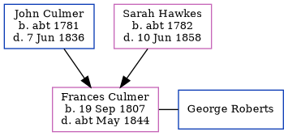

Frances Roberts (née Culmer) 1807 - c1844
[ Home ] | [ Calendar ] | [ Surnames Index ] | [ Errors ] | [ Family History ]The child of John Culmer (a parish clerk) and Sarah Hawkes, Frances Culmer, the four times great-aunt of Nigel Horne, was born in Stourmouth, Kent, England on 19 Sept 18071 and baptised there on 11 Oct 1807. She married George Roberts at St Mildred's Church, Preston, Kent, England on 31 Jul 1828.
She died c. May 1844 in Eastry, Kent, England2.
Parents
- John was born c. 1781
- Sarah Anne was born c. 1782
Citations
- Kent, England, Tyler Index to Parish Registers, 1538-1874 Online publication - Provo, UT, USA: Ancestry.com Operations, Inc., 2010. This collection was indexed by Ancestry World Archives Project contributors.Original data - Frank Watt Tyler. The Tyler Collection. Canterbury, Kent, England: The Institute of Herald
- England & Wales deaths 1837-2007 - Findmypast
Media
Canterbury Baptisms Transcription - GBPRS-CANT-B-96716006
England Marriages 1538-1973 - R_848215939/2
Kent, Canterbury Archdeaconry marriages 1538-1928 - GBPRS/CANT/M/97166074/2
England & Wales deaths 1837-2007 - BMD/D/1844/2/AZ/000619/016
England Births & Baptisms 1538-1975 - R_883278854
England Births & Baptisms 1538-1975 - R_883903415
Family Tree
Map
Generated by ged2site. Last updated on Jul 3, 2024
Known Issues
Marriage date (31 Jul 1828) has no citations